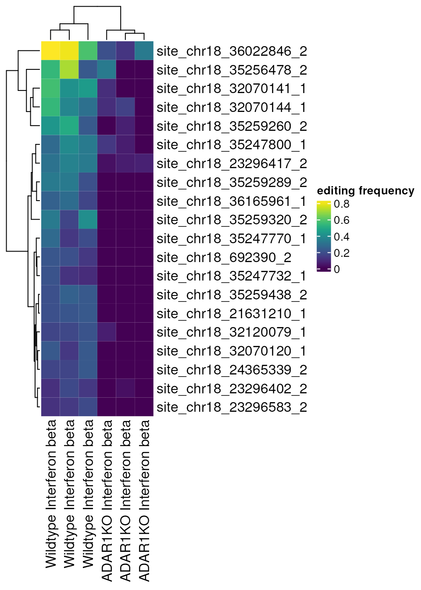

Introducing the raer package
Kent Riemondy
University of Colorado School of MedicineKristen Wells-Wrasman
University of Colorado School of Medicine2023-03-10
Source:vignettes/raer.Rmd
raer.RmdDifferential Editing tutorial
This vignette will demonstrate how to identify RNA editing sites with
condition-specific editing frequencies using the raer
package.
Set up
library(raer)
library(SummarizedExperiment)
library(DESeq2)
library(ComplexHeatmap)
library(viridis)
library(rtracklayer)In this vignette a public RNA-seq dataset will be analyzed, GSE99249, which consists of ADAR1 mutants and control human cell lines, conditionally treated with Interferon-Beta. For simplicity we will examine the ADAR1 WT and KO samples both treated with IFN-B, with triplicate samples.
Aligned BAM files and other necessary files have been preprocessed
for this vignette. These files occupy ~250 Mb of space and by default
they are stored in a temporary directory. Change the
data_dir variable to a valid file path to keep the files
for reuse.
data_dir <- tempdir()
fns <- download_GSE99249(data_dir)Next we’ll collect a vector containing the paths to each BAM file These BAM files are a subset of the full BAM files, containing only alignments from chromosome 18.
bam_files <- fns$bams
bam_files[1:2]## SRR5564260_dedup_sorted.bam
## "/tmp/RtmpBSlfIB/SRR5564260_dedup_sorted.bam"
## SRR5564261_dedup_sorted.bam
## "/tmp/RtmpBSlfIB/SRR5564261_dedup_sorted.bam"Next we’ll need a FASTA file to quantify the editing sites. We’ll use a FASTA file only containing chromosome 18 for this demo. The fasta can be compressed.
fafn <- fns$fasta
fafn## chr18.fasta.bgz
## "/tmp/RtmpBSlfIB/chr18.fasta.bgz"Lastly, we’ll use a BED file containing the coordinates of known human editing sites from the REDIPortal database. This file can also be optionally compressed.
sites <- import(fns$bed)
sites## GRanges object with 250442 ranges and 2 metadata columns:
## seqnames ranges strand | name score
## <Rle> <IRanges> <Rle> | <character> <numeric>
## [1] chr18 22898 + | chr18:22898:+ 0
## [2] chr18 22909 + | chr18:22909:+ 0
## [3] chr18 22932 + | chr18:22932:+ 0
## [4] chr18 22942 + | chr18:22942:+ 0
## [5] chr18 22948 + | chr18:22948:+ 0
## ... ... ... ... . ... ...
## [250438] chr18 80251604 + | chr18:80251604:+ 0
## [250439] chr18 80251607 + | chr18:80251607:+ 0
## [250440] chr18 80251609 + | chr18:80251609:+ 0
## [250441] chr18 80251634 + | chr18:80251634:+ 0
## [250442] chr18 80251647 + | chr18:80251647:+ 0
## -------
## seqinfo: 1 sequence from an unspecified genome; no seqlengthsGenerate editing site read counts
The pileup_sites() function will calculate base counts
across multiple BAM files. The base counts will be returned as a list of
GRanges objects for each bam file. The
FilterParam() function provides numerous filters to exclude
reads and bases based on commonly used filters for detecting RNA-editing
events. Specific regions can be queried using the region
argument, or specific positions can be queried by providing
bedfile a path to a BED-file.
Internally, pileup_sites() will generate pileups in
memory. However, these files can also be stored in a tabix-indexed
format, for later retrieval, or for querying specific regions.
fp <- FilterParam(
only_keep_variants = TRUE,
trim_5p = 5,
trim_3p = 5,
min_base_quality = 30L,
min_mapq = 255L,
library_type = "fr-first-strand",
min_splice_overhang = 10
)
rse <- pileup_sites(bam_files,
fafile = fafn,
sites = sites,
region = "chr18",
param = fp
)Pileups data is stored in a summarizedExperiment object,
which permits comparisons across each sample. The rowData()
and rowRanges() slots can be populated with information
related to each editing site, and similarly the colData()
slot can be used to store sample metadata. The summarizedExperiment
object can also interface with other derivative classes, such as
singleCellExperiment().
The base counts are counted in a stand specific fashion depending on
the library-type parameter. The REF and
ALT bases are in reference to the strand.
rse## class: RangedSummarizedExperiment
## dim: 6287 6
## metadata(0):
## assays(7): ALT nRef ... nC nG
## rownames(6287): chr18_168574_+ chr18_168577_+ ...
## chr18_80172518_- chr18_80174441_-
## rowData names(4): REF rbpz vpb sor
## colnames(6): SRR5564260_dedup_sorted.bam
## SRR5564261_dedup_sorted.bam ... SRR5564271_dedup_sorted.bam
## SRR5564277_dedup_sorted.bam
## colData names(1): sampleNext we will add sample metadata to the
summarizedExperiment, which will be used to conduct
differential editing analysis.
colData(rse)$genotype_treatment <- rep(
c(
"ADAR1KO Interferon beta",
"Wildtype Interferon beta"
),
each = 3
)
colData(rse)$genotype <- rep(
c(
"ADAR1KO",
"Wildtype"
),
each = 3
)
colData(rse)## DataFrame with 6 rows and 3 columns
## sample genotype_treatment
## <character> <character>
## SRR5564260_dedup_sorted.bam SRR5564260_dedup_sor.. ADAR1KO Interferon b..
## SRR5564261_dedup_sorted.bam SRR5564261_dedup_sor.. ADAR1KO Interferon b..
## SRR5564269_dedup_sorted.bam SRR5564269_dedup_sor.. ADAR1KO Interferon b..
## SRR5564270_dedup_sorted.bam SRR5564270_dedup_sor.. Wildtype Interferon ..
## SRR5564271_dedup_sorted.bam SRR5564271_dedup_sor.. Wildtype Interferon ..
## SRR5564277_dedup_sorted.bam SRR5564277_dedup_sor.. Wildtype Interferon ..
## genotype
## <character>
## SRR5564260_dedup_sorted.bam ADAR1KO
## SRR5564261_dedup_sorted.bam ADAR1KO
## SRR5564269_dedup_sorted.bam ADAR1KO
## SRR5564270_dedup_sorted.bam Wildtype
## SRR5564271_dedup_sorted.bam Wildtype
## SRR5564277_dedup_sorted.bam WildtypePrepare for differential editing
We next use the calc_edit_frequency function to identify
the percent of edits for each position and sample. With the
drop = TRUE argument we will also exclude sites without an
adenosine. The editing frequencies will not be used for differential
editing analysis, which will be conducted using the raw counts, however
these are useful for filtering and visualization.
se_filtered <- calc_edit_frequency(rse,
edit_from = "A",
edit_to = "G",
drop = TRUE
)We can next subset the summarizedExperiment object to
exclude low frequency editing events. For this analysis we will require
that an editing site shows editing in at least 1 sample, and have at
least 5 counts in each sample.
has_editing <- rowSums(assay(se_filtered, "edit_freq") > 0) >= 1
has_depth <- rowSums(((assay(se_filtered, "nRef") +
assay(se_filtered, "nAlt")) >= 5)) == ncol(se_filtered)
se_filtered <- se_filtered[has_editing & has_depth, ]
se_filtered## class: RangedSummarizedExperiment
## dim: 608 6
## metadata(0):
## assays(9): ALT nRef ... depth edit_freq
## rownames(608): chr18_204625_+ chr18_204626_+ ... chr18_80158602_-
## chr18_80158603_-
## rowData names(4): REF rbpz vpb sor
## colnames(6): SRR5564260_dedup_sorted.bam
## SRR5564261_dedup_sorted.bam ... SRR5564271_dedup_sorted.bam
## SRR5564277_dedup_sorted.bam
## colData names(5): sample genotype_treatment genotype n_sites
## edit_idxOnce the object has been filtered, you can prepare it for DE. This means making a new object that contains an assay with read counts if both the alt and ref alleles in a single matrix.
deobj <- prep_for_de(se_filtered,
min_prop = 0.1,
max_prop = 0.9,
min_samples = 3
)
assay(deobj, "counts")[1:3, 1:6]## SRR5564260_dedup_sorted.bam_ref
## chr18_692390_- 6
## chr18_692402_- 5
## chr18_21631169_+ 8
## SRR5564261_dedup_sorted.bam_ref
## chr18_692390_- 12
## chr18_692402_- 10
## chr18_21631169_+ 10
## SRR5564269_dedup_sorted.bam_ref
## chr18_692390_- 13
## chr18_692402_- 13
## chr18_21631169_+ 15
## SRR5564270_dedup_sorted.bam_ref
## chr18_692390_- 18
## chr18_692402_- 14
## chr18_21631169_+ 10
## SRR5564271_dedup_sorted.bam_ref
## chr18_692390_- 13
## chr18_692402_- 10
## chr18_21631169_+ 3
## SRR5564277_dedup_sorted.bam_ref
## chr18_692390_- 8
## chr18_692402_- 3
## chr18_21631169_+ 4Run differential editing (DESeq2)
At this stage, you can use the object to perform DE yourself or you can continue with our pre built functions
For differential editing, we use the design
design <- ~0 + condition:sample + condition:count.
For the samples, you can leave as is or combine so the same sample name shows up in both the treatment and control. These results are not identical but they are close. In my hands, the same genes come out, but the p values and log fold change values are slightly different.
It is probably best to update the levels of your object, but if you don’t, this will still work.
de_results <- perform_de(deobj,
sample_col = "sample",
condition_col = "genotype",
condition_control = "Wildtype",
condition_treatment = "ADAR1KO"
)This returns a list containing the dds object, the full results, the significant results, and the model matrix.
de_results$sig_results[1:5, ]## logFC logCPM LR PValue FDR
## chr18_50393235_+ -8.033976 21.73892 11.360332 0.0007502942 0.020463
## chr18_35248579_+ -8.129393 22.69356 10.096657 0.0014853852 0.020463
## chr18_23297504_- -7.692014 21.72512 10.028647 0.0015412421 0.020463
## chr18_21631272_+ -7.091754 20.75260 9.796561 0.0017483853 0.020463
## chr18_50392804_+ -7.446234 21.07996 9.785101 0.0017593156 0.020463
top_sites <- rownames(de_results$sig_results)[1:20]
Heatmap(assay(se_filtered, "edit_freq")[top_sites, ],
col = viridis(100),
column_labels = se_filtered$genotype_treatment
)
unlink(data_dir)Session info
## R Under development (unstable) (2023-03-02 r83926)
## Platform: x86_64-pc-linux-gnu (64-bit)
## Running under: Ubuntu 22.04.2 LTS
##
## Matrix products: default
## BLAS: /usr/lib/x86_64-linux-gnu/openblas-pthread/libblas.so.3
## LAPACK: /usr/lib/x86_64-linux-gnu/openblas-pthread/libopenblasp-r0.3.20.so; LAPACK version 3.10.0
##
## locale:
## [1] LC_CTYPE=en_US.UTF-8 LC_NUMERIC=C
## [3] LC_TIME=en_US.UTF-8 LC_COLLATE=en_US.UTF-8
## [5] LC_MONETARY=en_US.UTF-8 LC_MESSAGES=en_US.UTF-8
## [7] LC_PAPER=en_US.UTF-8 LC_NAME=C
## [9] LC_ADDRESS=C LC_TELEPHONE=C
## [11] LC_MEASUREMENT=en_US.UTF-8 LC_IDENTIFICATION=C
##
## time zone: UTC
## tzcode source: system (glibc)
##
## attached base packages:
## [1] grid stats4 stats graphics grDevices utils datasets
## [8] methods base
##
## other attached packages:
## [1] rtracklayer_1.59.1 viridis_0.6.2
## [3] viridisLite_0.4.1 ComplexHeatmap_2.15.0
## [5] DESeq2_1.39.8 SummarizedExperiment_1.29.1
## [7] Biobase_2.59.0 GenomicRanges_1.51.4
## [9] GenomeInfoDb_1.35.15 IRanges_2.33.0
## [11] S4Vectors_0.37.4 BiocGenerics_0.45.0
## [13] MatrixGenerics_1.11.0 matrixStats_0.63.0
## [15] raer_0.99.0 BiocStyle_2.27.1
##
## loaded via a namespace (and not attached):
## [1] RColorBrewer_1.1-3 jsonlite_1.8.4
## [3] shape_1.4.6 magrittr_2.0.3
## [5] GenomicFeatures_1.51.4 rmarkdown_2.20
## [7] GlobalOptions_0.1.2 fs_1.6.1
## [9] BiocIO_1.9.2 zlibbioc_1.45.0
## [11] ragg_1.2.5 vctrs_0.5.2
## [13] memoise_2.0.1 Cairo_1.6-0
## [15] Rsamtools_2.15.1 RCurl_1.98-1.10
## [17] htmltools_0.5.4 progress_1.2.2
## [19] curl_5.0.0 sass_0.4.5
## [21] bslib_0.4.2 desc_1.4.2
## [23] cachem_1.0.7 GenomicAlignments_1.35.1
## [25] lifecycle_1.0.3 iterators_1.0.14
## [27] pkgconfig_2.0.3 Matrix_1.5-3
## [29] R6_2.5.1 fastmap_1.1.1
## [31] GenomeInfoDbData_1.2.9 clue_0.3-64
## [33] digest_0.6.31 colorspace_2.1-0
## [35] AnnotationDbi_1.61.1 rprojroot_2.0.3
## [37] textshaping_0.3.6 RSQLite_2.3.0
## [39] filelock_1.0.2 fansi_1.0.4
## [41] httr_1.4.5 compiler_4.3.0
## [43] bit64_4.0.5 doParallel_1.0.17
## [45] BiocParallel_1.33.9 DBI_1.1.3
## [47] highr_0.10 R.utils_2.12.2
## [49] biomaRt_2.55.0 rappdirs_0.3.3
## [51] DelayedArray_0.25.0 rjson_0.2.21
## [53] tools_4.3.0 R.oo_1.25.0
## [55] glue_1.6.2 restfulr_0.0.15
## [57] cluster_2.1.4 generics_0.1.3
## [59] gtable_0.3.1 BSgenome_1.67.4
## [61] R.methodsS3_1.8.2 data.table_1.14.8
## [63] hms_1.1.2 xml2_1.3.3
## [65] utf8_1.2.3 XVector_0.39.0
## [67] foreach_1.5.2 pillar_1.8.1
## [69] stringr_1.5.0 limma_3.55.5
## [71] circlize_0.4.15 splines_4.3.0
## [73] dplyr_1.1.0 BiocFileCache_2.7.2
## [75] lattice_0.20-45 bit_4.0.5
## [77] tidyselect_1.2.0 locfit_1.5-9.7
## [79] Biostrings_2.67.0 knitr_1.42
## [81] gridExtra_2.3 bookdown_0.33
## [83] edgeR_3.41.6 xfun_0.37
## [85] stringi_1.7.12 yaml_2.3.7
## [87] evaluate_0.20 codetools_0.2-19
## [89] tibble_3.2.0 BiocManager_1.30.20
## [91] cli_3.6.0 systemfonts_1.0.4
## [93] munsell_0.5.0 jquerylib_0.1.4
## [95] Rcpp_1.0.10 dbplyr_2.3.1
## [97] png_0.1-8 XML_3.99-0.13
## [99] parallel_4.3.0 ellipsis_0.3.2
## [101] pkgdown_2.0.7 ggplot2_3.4.1
## [103] blob_1.2.3 prettyunits_1.1.1
## [105] bitops_1.0-7 scales_1.2.1
## [107] purrr_1.0.1 crayon_1.5.2
## [109] GetoptLong_1.0.5 rlang_1.0.6
## [111] KEGGREST_1.39.0